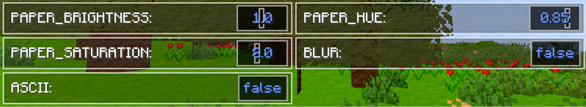
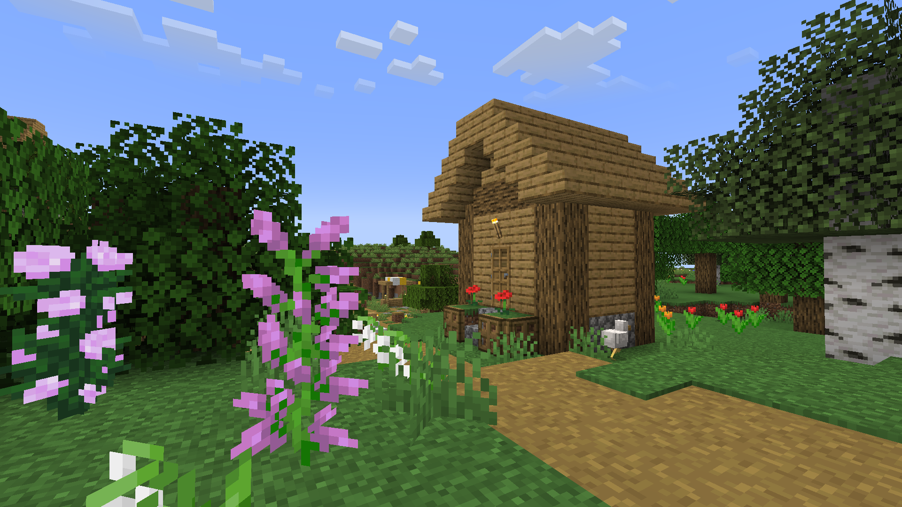
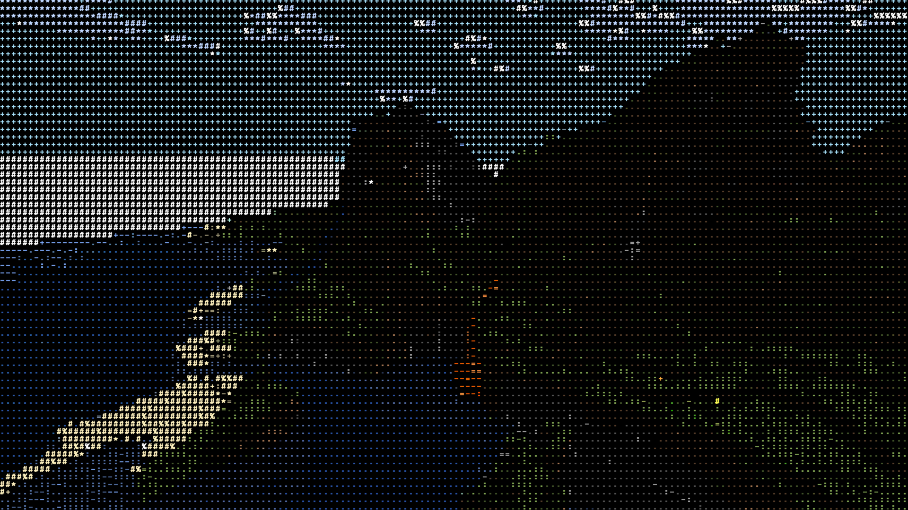

CS184/284A Spring 2025
Final Project
Non-photorealistic Shader in Minecraft
Team 37: Zaychik Liu, Candice Yang, Annika Liu, Andy Zhang
Links
Abstract
Our project is a non-photorealistic watercolor rendering shader for Minecraft, inspired by the real-time watercolor techniques proposed by Luft and Deussen. Built using the Iris shader framework, our pipeline integrates multiple layered effects to simulate the soft, fluid characteristics of watercolor. We began by segmenting scene geometry using Minecraft’s internal mc_Entity attribute, enabling object-aware simplification. We then applied directional Gaussian blurs to remove hard textures and approximate the simplified washes of color typical in watercolor paintings. Intensity maps were derived from edge-aware blurs to drive pigment flow and edge diffusion. To mimic traditional techniques, we implemented edge darkening via alpha modulation and pigment granulation by perturbing paper texture values, creating the illusion of pigment settling into paper fibers. Due to Minecraft’s limitations on alpha transparency, we creatively redefined the alpha channel as a blending weight between scene color and paper texture. Additionally, we developed an ASCII shader variant using luminance-based glyph sampling and color quantization to simulate retro terminal-style visuals. Our results demonstrate a cohesive fusion of real-time graphics techniques and painterly stylization within a voxel-based rendering context.Technical Approach
Watercolor shader
Simplification and abstractionTo mimic the stylization of watercolor paintings, the first step of this method is to reduce visual complexity through simplification and abstraction.
First, we need to segment objects so that the properties of various objects such as color and edges can be processed separately. First, we imported the inherent attribute
mc_Entity in Minecraft in
gbuffer_terrain.vsh (different objects have unique IDs), and
exported it to gbuffer_terrain.fsh as passedEntity, and
normalized it to colortex4 to achieve the segmentation effect. 
composite.fsh, output it into colortex0. Next we applied a
Gaussian convolution kernel to remove sharp textures and details, leaving
only the basic color areas that define the scene, in order to imitate the
blur of watercolor; it is worth mentioning that we did not use two layers
of nested loops, instead, we blurred the X and Y directions separately,
and output them to colortex5 and colortex6 respectively. They are mainly
achieved in composite1.* and composite2.*.
 At the same time, after Gaussian blurring, we can use the edge strength to
get the intensity variable, which specifically reflects the distance from
a point to the edge, which is convenient for us to mix colors and further
process them later. This is very different from the order in the paper
where intensity is obtained first and then Gaussian blur is performed.
This is because it is too troublesome to calculate the center of each
continuous surface in Minecraft, and we have achieved an efficient
replacement in this way.
At the same time, after Gaussian blurring, we can use the edge strength to
get the intensity variable, which specifically reflects the distance from
a point to the edge, which is convenient for us to mix colors and further
process them later. This is very different from the order in the paper
where intensity is obtained first and then Gaussian blur is performed.
This is because it is too troublesome to calculate the center of each
continuous surface in Minecraft, and we have achieved an efficient
replacement in this way.
Such simplified abstraction is similar to the wash-like blocks of color in traditional watercolor paintings. This abstraction reflects how human artists reduce the sense of reality in pursuit of clarity of expression.
Shape Exaction and Flow Pattern
After obtaining the intensity and edge intensity, we can process the edges and feather the image (flow mode). We first processed colortex5 and colortex6, that is, the edge intensity in the horizontal and vertical directions, defined ktheta, and used this coefficient to perform weighted fusion of colortex5 and colortex6 in composite3.* and output it to colortex7. The specific formula is as follows:
We first defined kp, ks. Unlike the fusion of transparency in the paper, due to the characteristics of Minecraft, only special objects such as fluids and glass can modify the transparency, and other objects will be reset to 1 by the system even if the transparency is explicitly modified. Therefore, we directly use the derivative alpha of intensity as the weighting coefficient to directly fuse the object texture color and the paper texture color. In this way, we can smoothly blur and expand the boundary to achieve the effect of water diffusion. The specific formula is as follows:
Edge Darkening
Edge darkening mimics the effect of traditional watercolor painting, where pigment gathers along the borders of the painted area. This is essential for emphasizing structural lines and shapes. The technique involves applying a dark semi-transparent layer along the detected edges to simulate the capillary effect, where wet pigment gathers at the edge of the wet area and becomes darker when it dries. By carefully controlling the density and transparency of these overlays, the system enhances edge contrast while retaining the soft beauty of water-based media. To achieve this, we define kw to further weight alpha to ensure that the color of the edges is darker. The specific formula is as follows, which is also implemented in final.fsh: Pigment Granulation
The pigment particles simulate the uneven deposition and distribution of watercolor paint in the paper texture. In real watercolor paintings, heavier pigment particles tend to settle in the depressions on the paper surface, creating a mottled granular feel. To achieve this, in final.fsh, we first obtain the color of the paper texture, paperRGB, and assign it to t. Next, we transform the value range of t and map it to [-1,1] to simulate the depression of the paper. Next, we define kt to weight alpha and participate in the final color mixing. The specific formula is as follows.
Composition
In composition, we have designed a variety of modes for players to choose from. Here we only explain the most classic color mixing mode. In the above steps, we simulated the transparency alpha, and processed the original image step by step using operations such as Gaussian blur and edge enhancement to obtain C_rgb in the paper. Then, we extracted the texture of the paper as the background B_rgb. After that, we can use the following formula for weighting as the final output:
Additional Function
We have designed many adjustable parameters for players to adjust the visual effects. For example, when the parameter PaperColor is checked as available, players can adjust the final saturation and hue through the built-in function adjustHueSaturation, as well as PAPER_SATURATION and PAPER_HUE in the UI. This series of functions are implemented in function.glsl, and we use the mutual conversion between RGB and HSV to achieve this. In addition, the coefficients mentioned above, such as kp, ks, etc., can all be adjusted to achieve satisfactory results. 
Problems encountered & workarounds
The problems we encountered mainly occurred due to restrictions on the Minecraft rendering pipeline. The first problem is how to tackle Minecraft's divisive rendering of nearby blocks. What Minecraft does is it demarcates the blocks no matter if they are the same type or not.
But to simulate a watercolor effect, we would like blocks of the same type to be considered one single object, therefore sharing color, without any boundaries within the intersection. What we did is we used Iris’ (a Minecraft shader tool) intrinsic MC_Entity variable, processed during gbuffer_* vertex shader passes. We manually assign a unique ID to a block type, and pass this value (flattening them out to ensure no interpolation) to the fragment shader so it knows which block the fragment belongs to. We then store all this information in a colortex file, with block ID as the value for each pixel.
Another problem occurs in the second stage: simplification and abstraction. The paper specifies using a gaussian blur function to calculate and output the intensity map for each object. We first tried implementing it with a 2D gaussian blur function with a double for-loop, but it is too costly given that we want a higher blur radius. We then decided to utilize the inherent shader pipeline to implement two 1D gaussian blur passes. We first horizontally blur for each pixel to get the intensity value from all horizontal neighbors and store these in a colortex. Then, in another composite pass, we vertically blur the values from this colortex to get a final intensity image as desired. This ensures that we optimize the runtime for real-time rendering while maintaining the same result.
Lastly, and again, a problem with Minecraft's incompatibility. Minecraft strictly prohibits any modification to its fragments' alpha values (opacity) beside some very special block entities (such as liquid or glass). With opacity being the main differentiator of a watercolor shader from others, we need to find a way to work around this. We came across this by using the alpha value to blend (interpolate) between the base color and the paper color instead. A higher opacity (therefore higher alpha value) would correspond to a lower amount of mix with the background, and vice versa. Through this, we were able to achieve a similar result.
Lessons learned
Definitely keep optimization in mind when working on real time rendering. Any unoptimized or incautious algorithm could reflect in exponential rendering time and thus lower FPS and lag for the user. We had to redo our gaussian blur function because we didn’t keep that in mind. Also, another important takeaway is to carefully check documentation and learn the platform before starting. We only discovered Minecraft’s prohibition of alpha channel changes when we are already half way through the pipeline. Have we discovered earlier, we may come up with a work around to achieve a better result.
ASCII shader
We create another Minecraft shader using the texture of a list of ASCII characters, with uniform colors on each glyph, to accomplish a retro “terminal” style shader. To achieve this, we downsampled the pixels into cells to represent ASCII characters, each using a downsampled color to represent the cell.Pipeline - Downsampling cells
First we segment the entire screen pixels to assign each cell to a list of ASCII characters. To determine which character to assign to, we sample within each cell to get a representing rgb color, and take the dot product with an illuminance vector that can be fine tuned. We choose the list of characters ‘@%#*+=-:.‘, where ‘@’ represents cells within the highest illuminance range and ‘.’ represents cells within the lowest illuminance range. We used the PIL library from python to generate the glyph texture. Then the texture of the character with the corresponding glyph coverage is mapped to all pixels within that cell.
Pipeline - Downsampling colors
In order to create the effect of “terminal-style” art, we decided to downsample the colors as well to simulate the incapability for an old computer terminal to generate rich color. In addition to sampling the representing color for each cell, we also reduce the bit depth of the color for each pixel, so that limited numbers of color can be represented, and all colors would be converted to the nearest representable color. Lastly, the glyph texture is multiplied with the downsampled color to obtain the final result.
Problems encountered & workarounds
The first problem we encountered when downsampling cells is that most color ends up being within the lowest illuminance range, so that the screen is filled with mostly ‘.’. This not only creates the difficulty of distinguishing the texture and lighting of an object (as it is filled with only periods), but also makes the entire scene much dimmer than desired. We decided to add a sqrt function after the dot product to elevate the illuminance of pixels within the lower range. Below is a comparison of the effects before and after taking the sqrt.
Another issue occurs when downsampling the color. It turns out that reducing the bit depth on RGB values would distort the color (imagine r value is truncated to lower bit representation and g value is rounded to a higher one). To solve this problem, we implemented a function to convert the RGB value to HSV value, so that we can downsample the hue value separately. Below is a comparison of the original image, the images obtained through downsampling using RGB, and using HSV. In the RGB downsampling, it is clear that some pixels in the dirt and wood turn reddish, and the entire color tone turns cooler.


Results
Result 1: ASCII Shader Demo
Result 2: Watercolor Shader Demo

ASCII shader pictures
in-screen comparison of the vanilla shader and our ASCII shader
References
- Intro to Iris shaders
- ASCII in Minecraft
- Past CS184 project: Watercolor Shader
- Real-Time Watercolor for Animation
- FiraCode – a monospaced font
- RGB to HSV algorithm
- Ink shader
Contributions
- Zaychik Liu: Researched and evaluated available Minecraft shader tools, set up an intro-to-Minecraft-shader document for teammates, summarized a pipeline note and the possible implementation method from the research paper, and integrated UI and other functions in the shader.
- Candice Yang: Set up the full development environment and build pipeline, produced and edited the project presentation video, and designed / implemented the web‑based final report page.
- Andy Zhang: Implemented the ASCII shader starting from a starter Minecraft shader that produces the vanilla shading effect and fine-tuned the functions and parameters used in the ASCII shader.
- Annika Liu: Implemented the watercolor shader from scratch, learning Minecraft's shader pipeline and Iris' API documentations.